Hardening the Ubuntu Server with SSH key-based authentication, firewall configuration, and secure user management, all performed via remote administration from the workstation.
This phase focuses on deploying the Ubuntu Server and implementing foundational security controls via remote administration.
On the Ubuntu Desktop workstation, I generated a 4096-bit RSA key pair to use for secure access to the server:
ssh-keygen -t rsa -b 4096 -C "andreimac@workstation"
This produced a private key (stored securely on the workstation) and a matching public key that can be safely copied to the server.
The public key was then copied to the Ubuntu Server so that SSH could trust connections from the workstation:
ssh-copy-id andreimac@192.168.56.102
This appended the workstation’s public key to ~/.ssh/authorized_keys on the server for the
andreimac account.
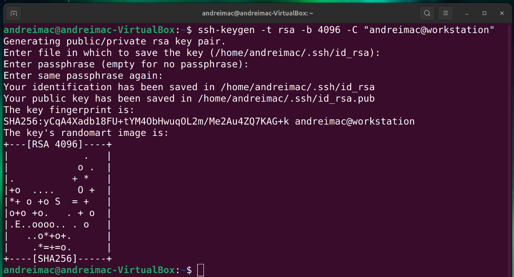
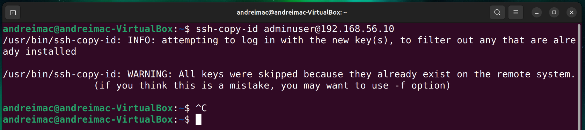
ssh-copy-id.
To reduce the attack surface of the server, I configured UFW (Uncomplicated Firewall) to allow SSH only from the workstation’s host-only IP address.
On the workstation, I confirmed the host-only network interface and its IP (in the
192.168.56.x range):
ip addr
sudo apt install ufw -y
sudo ufw enable
sudo ufw status verbose
SSH access was restricted so that only the workstation can initiate SSH connections to port 22:
sudo ufw allow from 192.168.56.10 to any port 22
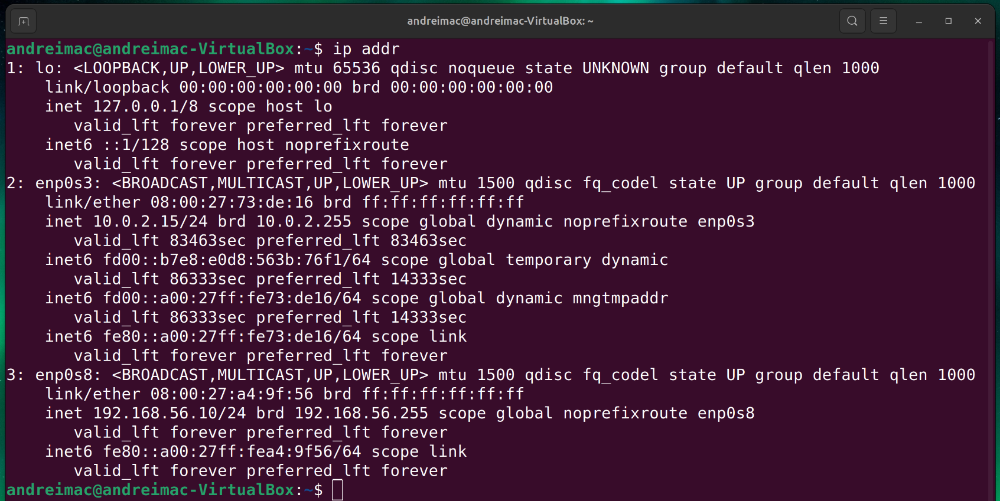
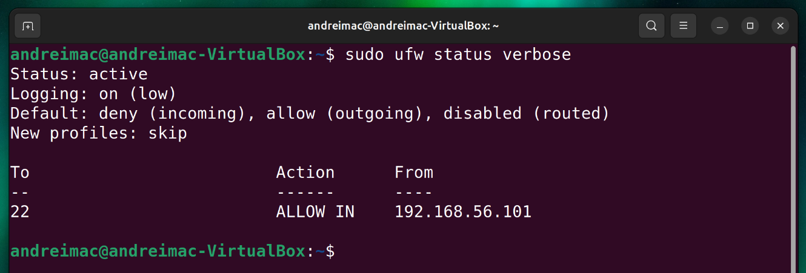
Administrative work should not be performed directly as root. To follow best practice, I created a
dedicated non-root administrative user and granted it sudo capabilities.
sudo adduser adminuser
sudo usermod -aG sudo adminuser
These commands created the adminuser account and added it to the
sudo group, allowing privileged commands via sudo <command> while still
requiring authentication.
Account creation was verified with:
cat /etc/passwd | grep adminuser
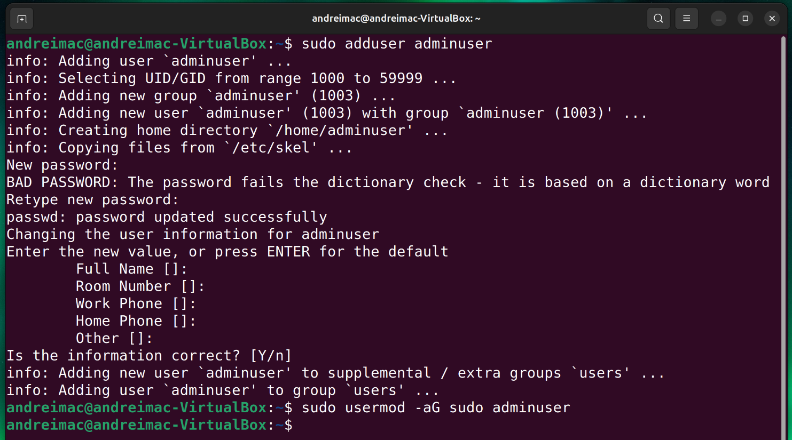
adminuser.
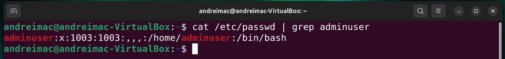
adminuser entry in /etc/passwd.
To confirm that administration now flows through the hardened path, I logged in as the new administrative user using key-based authentication:
ssh adminuser@192.168.56.102
The shell prompt changed to adminuser@ubuntu-server:~$, confirming that:
adminuser account exists and is active.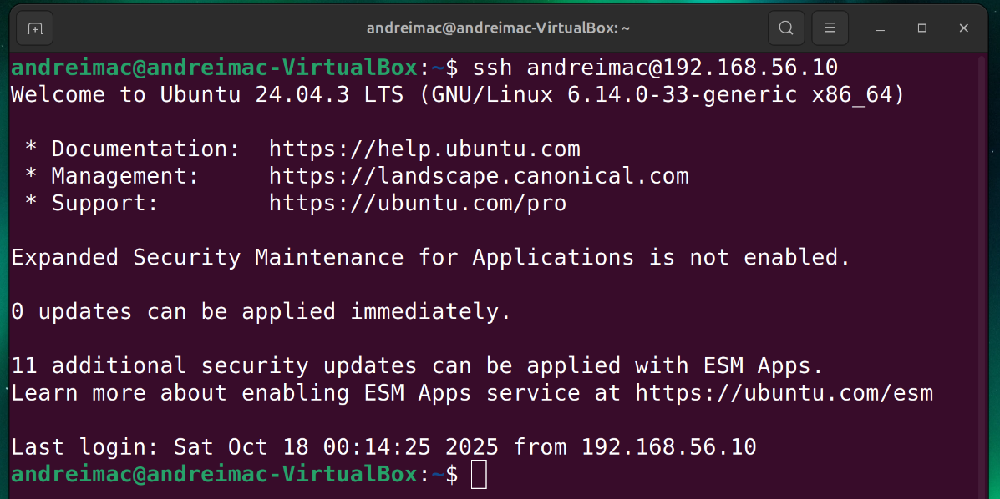
adminuser.
With key-based access and a sudo-enabled user in place, I hardened the SSH configuration by disabling
root login and password authentication in /etc/ssh/sshd_config.
PermitRootLogin yes PasswordAuthentication yes
PermitRootLogin no PasswordAuthentication no
After editing, I restarted the SSH daemon so the new settings took effect:
sudo systemctl restart ssh
Comparing the before and after versions highlights how a few targeted changes can significantly improve the security posture of the server.
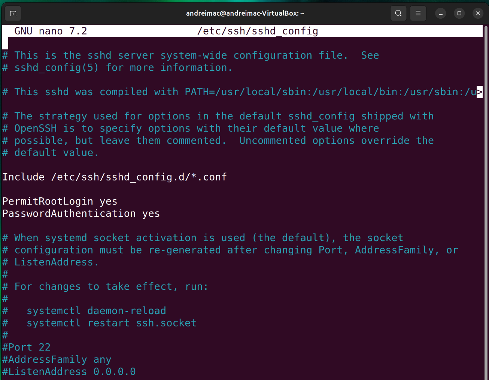
adminuser.
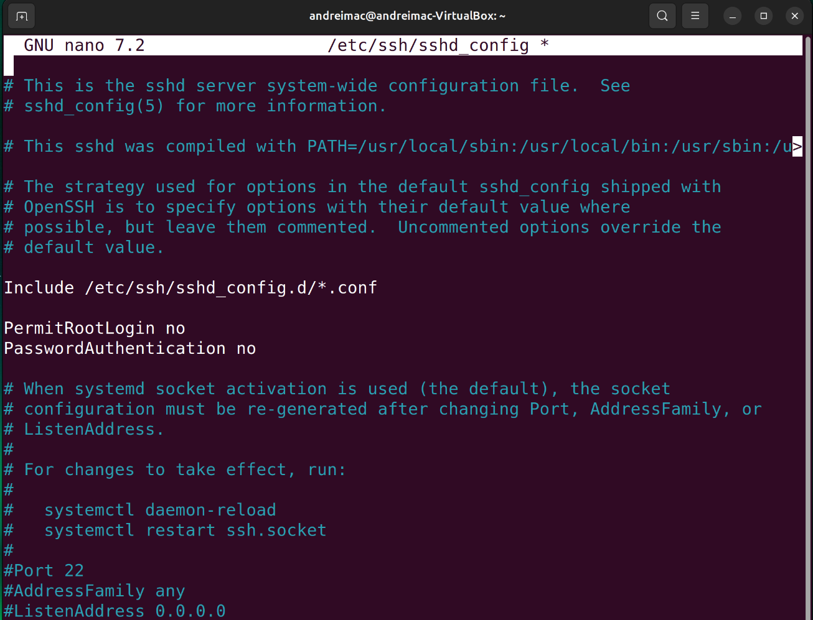
adminuser.
The active firewall rules were documented using sudo ufw status verbose, which shows the
default policies and per-rule configuration.
sudo ufw status verbose
In addition to the screenshot, the effective rules can be summarised as:
| Direction | From | To | Port / Service | Action |
|---|---|---|---|---|
| Incoming | 192.168.56.10 | Any | 22/tcp (SSH) | Allow |
| Incoming | Any | Any | All other ports | Deny (default) |
All administrative commands were executed remotely from the workstation over SSH. The following examples
were run from the adminuser@ubuntu-server:~$ prompt:
uname -a
Shows the server kernel version, architecture, and hostname.
free -h
Displays memory utilisation in human-readable units.
df -h
Reports disk usage and available space on mounted filesystems.
ip addr
Lists network interfaces and their assigned IP addresses on the server.
These commands provide operational visibility while respecting the remote-only administration constraint.
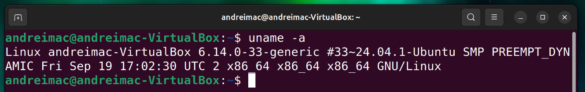
uname -a.
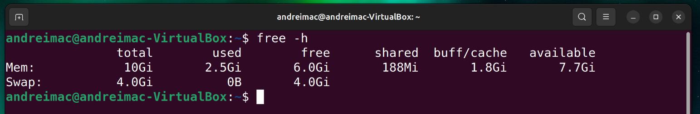
free -h over SSH.
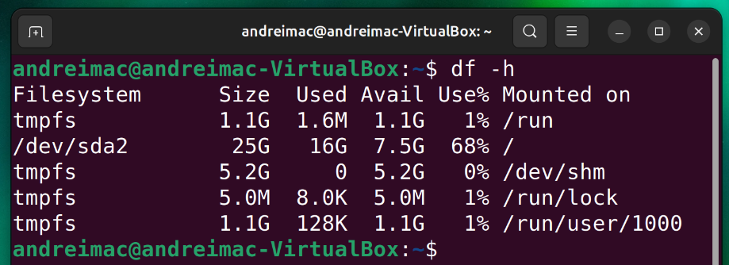
df -h over SSH.
Week 4 was about turning plans into enforceable controls. Enabling SSH key-based authentication and restricting SSH to the workstation significantly reduced the server’s exposure to unauthorised access. Moving administration to a non-root sudo user follows the principle of least privilege and lowers the risk of accidental or malicious system damage.
Working exclusively over SSH strengthened my confidence in managing a headless Ubuntu Server. Comparing the SSH configuration before and after hardening made it clear how a few targeted changes—disabling root login and password authentication—can greatly improve system security. These measures now form a solid base for the deeper security verification and monitoring work planned for subsequent weeks.